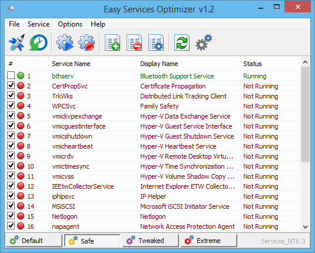
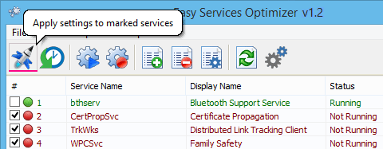
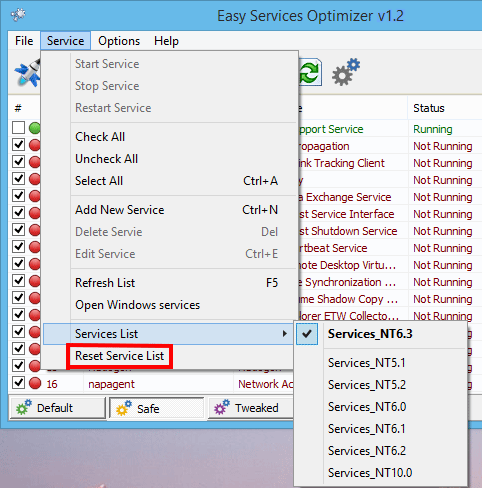
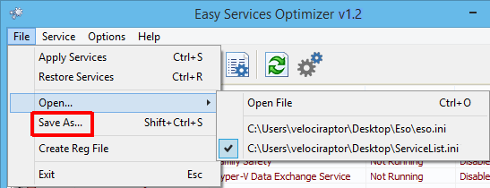
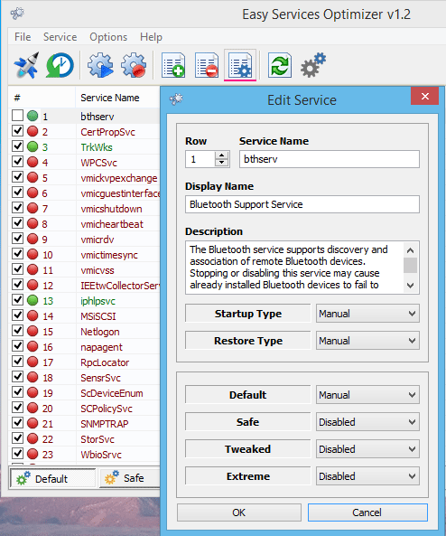
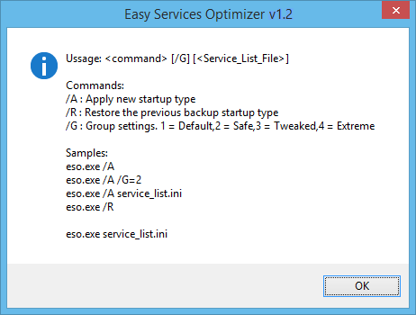

All Windows versions load many services at startup. Most of them (not all) are essential to the core system features. By disabling unnecessary services, performance can be can be improved significantly ,especially on computers with low system resources. Here are some of the Windows services that you can safely disable:
–¬†Print Spooler (if you don’t use a printer or print-to-PDF)
–¬†Bluetooth Support (if you don’t use any Bluetooth devices)
–¬†Remote Registry (this is not usually enabled by default, but if is you can disable it for safety)
–¬†Remote Desktop (3 services, which you can disable if you don’t use this)
Easy Service Optimizer makes it easy for the novice to disable unneeded services!
Last Update (Monday , 17 April 2017)
– Windows 10 service List Updated (Windows 10 Creators update 1803 support added)
Easy Service Optimizer  (ESO) is portable freeware to optimize services for almost all Windows versions (except for Win 98 and before). It does not require any technical knowledge and is safe to use because it only changes the startup state of the service, and settings are easy to restore. You can customize a pre-selected list, or create your own.

How to Use
After unzipping, run the program. ESO will detect your operating system, and show the appropriate Windows services list. You now have 4 choices :
1. Default (your current list of services)
2. Safe (a no risk selection)
3. Tweaked (an optimized selection)
4. Extreme (a high level of optimization)
After making a selection, click the ‘Apply Settings’ button.
NOTE: These lists include only services capable of optimization (not all of them). Adding a new service and changing its startup type can cause your system to become unstable. Please be careful. We do not accept responsibility for any mistakes..

You can easily change the service lists. You can add, edit, or delete a service. You can start, stop, or restart a service. Editing the list only changes the service’s startup type. For example, if you delete the service named ‘bthserv’ (Bluetooth), it only means you do not want to optimize that service. ESO will never delete the actual file
Reset services list
If you want to load the default list, just choose ‘Services –> Reset Service List’

In the Service menu, you can see the supported operating system services list as well.
Save Current services list
If you want to save the current list, select ‘File –> Save As’

On the same menu, you can create a .reg file or open a saved services list, and choose one to edit, or apply.
Add a new service or edit existing
By clicking the ‘Add’ button, you can add a new service to the list. You can edit an existing service by using the ‘Edit selected service’ button. In the Edit Service dialog, you can change the startup type, restore type, or change the state of a pre-set group.

Easy Service Optimizer also offers command line support, as displayed here:

Credit: For the Windows services optimizations , we used (in part) Black Viper‘s tweaks from his site.
Supported operating systems: Windows 10 , Windows 8.1 ,Windows 8 , Windows 7 , Windows Vista, Windows Xp – (x86 & x64)
Supported languages: English , Turkish , German , Swedish , Japanese , Vietnamese , French , Portuguese (Brazilian) , Spanish , Hungarian , Russian , Italian , Polish , Chinese Simplified , Chinese Traditional , Slovenian , Estonian , Indonesian , Greek, Korean , Dutch , Ukrainian , Finnish , Portuguese-PT , Thai , Arabic , Bulgarian , Hebrew


File: eso.exe
MD5: c2b20dc5880f9852ee15a13362f01204
SHA1: 846cc6c90cfee1250ee422b03066c8867e6235ab


A good program, is needed sorting by columns
I have been doing this the hard way for years , Great timesaver All good stuff
Дуже дякую за цю программу.
Spanish language added Thanks Marcelo
Hi! here is the Spanish translation: http://jmp.sh/5PAGJXU
Thank you, great app üôÇ
Please Unzip it first hashes belong to exe file/s
I assume you don’t update your file hashes automatically, because they currently don’t match the file downloaded.
Fixed please redownload it and use with eso.ini , some user run it without extracting (we don’t recommend it) , Thanks
A number of spelling mistakes in the English version.
Manuel -> Manual
Servie -> Service
Would also like sortable columns.
sortable columns is possible but what do you mean with List Filtering
Great app. Have always wanted something like this.
Two requests: list filtering and sortable columns.
Thanks. üôÇ
üôÇ Thanks for your Comment
Easy this, easy that, you could change your name to EasySoft!
I’m just joking!Thanks anyway!
French language added thanks
hello , Here is the French translation for “Easy Service Optimizer 1.0”
if you agree, see the attached file: http://www.cjoint.com/15av/EDdoiCXSBzA.htm
cordially
Vietnamese Language added , Thank you
Hi, I have been translated into Vietnamese
[Language_Tiếng Việt]
01=”Ph·∫°m Tu·∫•n Khanh – ptk911″
02=”T√™n d·ªãch v·ª•”
03=”T√™n hi·ªÉn th·ªã”
….